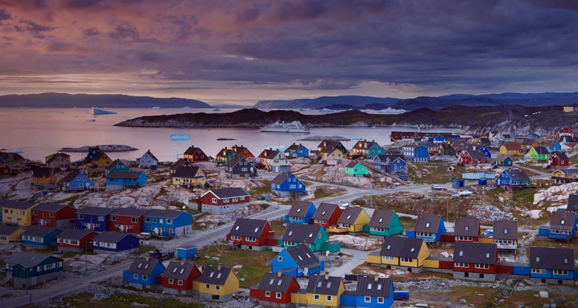
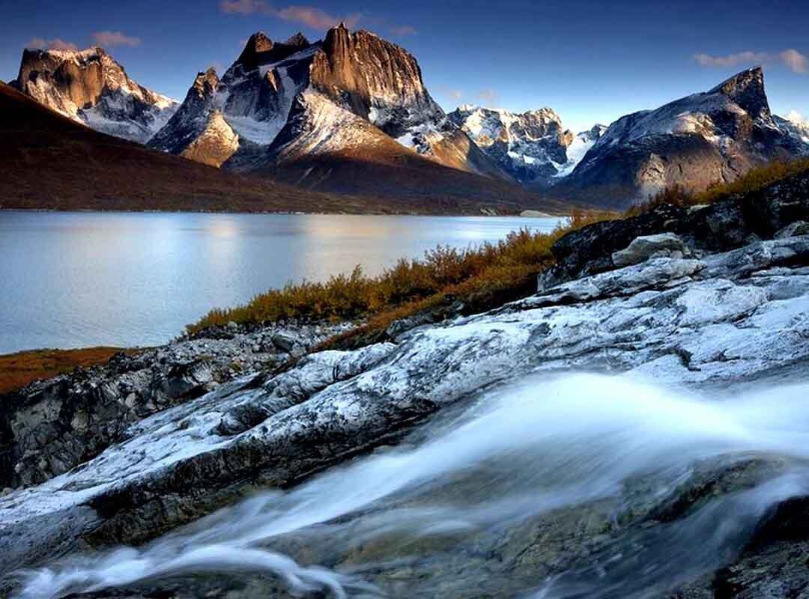
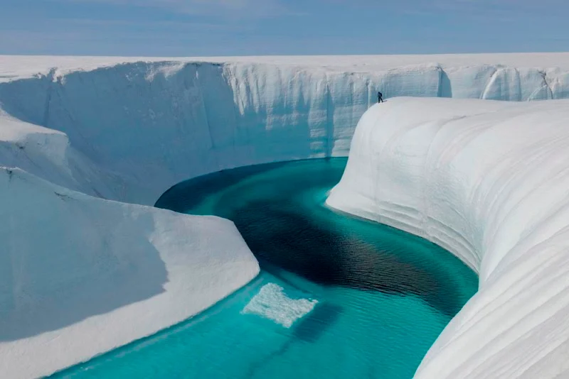
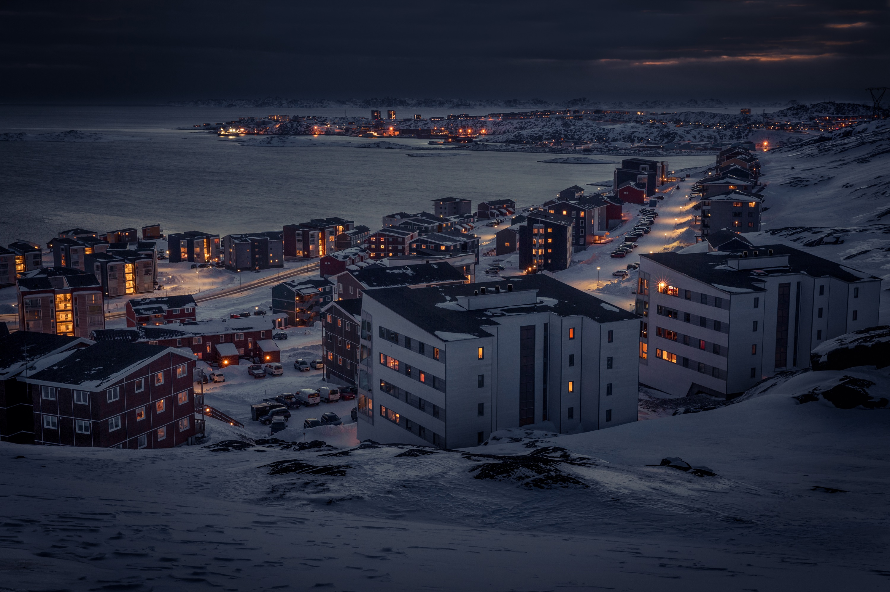
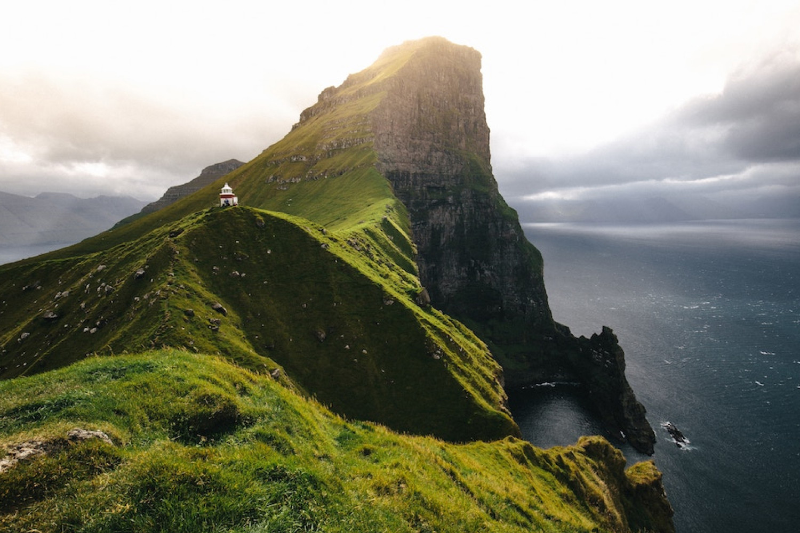
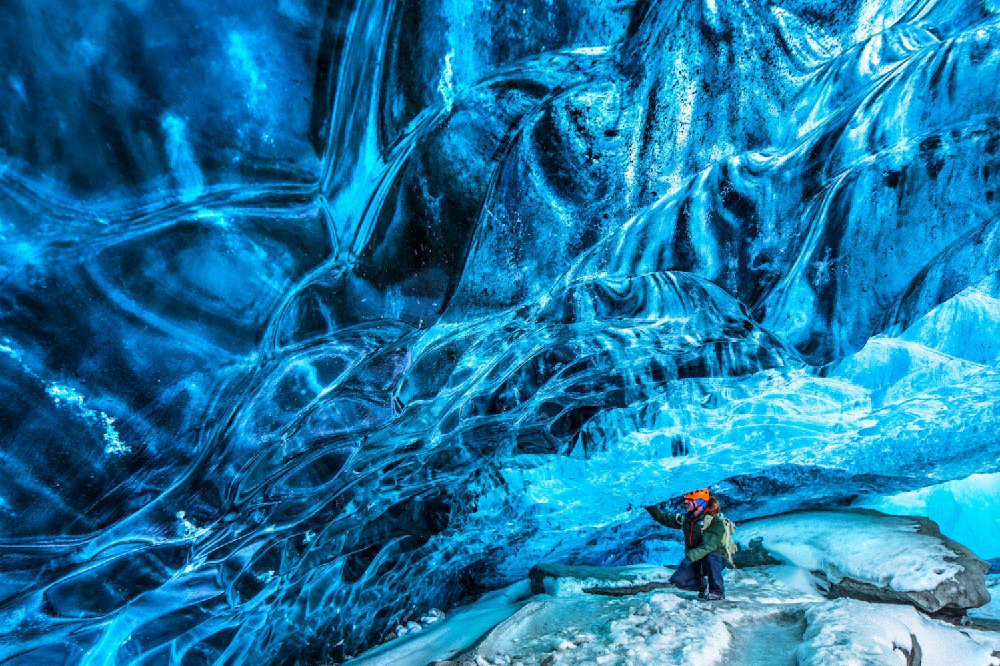
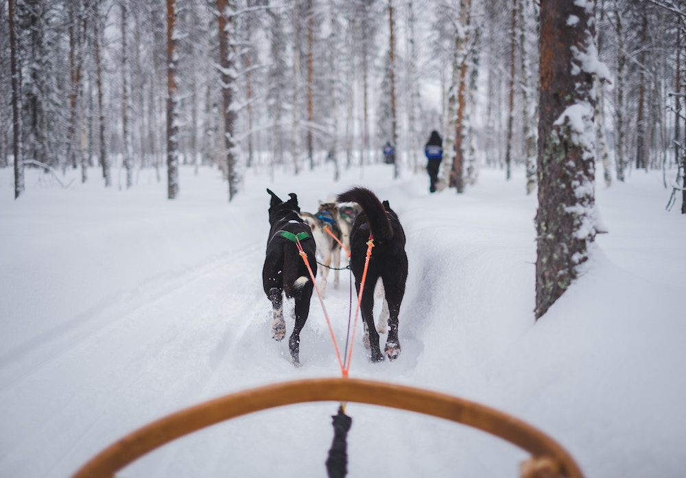
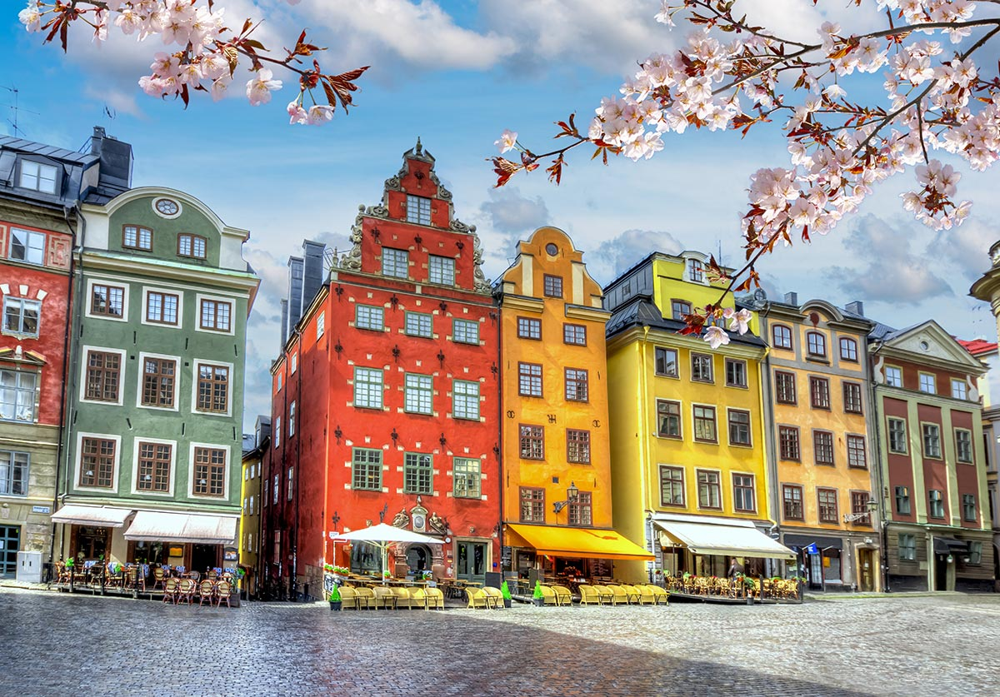

Sobre a Groenlândia
Sobre a Groelândia: A Groenlândia é um território autônomo da Dinamarca e a maior ilha do mundo, localizada na América do Norte. Banhada pelos oceanos Glacial Ártico e Atlântico, a maior parte de seu território está acima do Círculo Polar Ártico, influenciando seu clima polar e subártico. Com vegetação predominantemente de tundra, seu interior é coberto por uma camada permanente de gelo, levando a maioria da população a se concentrar na faixa costeira. Com cerca de 57 mil habitantes, sua capital é Nuuk. A economia baseia-se na pesca e no comércio de produtos derivados dela.
Pontos Turísticos
Icebergs na baía de Ilulissat

Fiordes da Groenlândia Oriental

Parque Nacional do Nordeste da Groenlândia

Capital Nuuk e suas atrações culturais

A Baía de Ilulissat, na Groenlândia, é famosa por abrigar icebergs espetaculares provenientes do glaciar Sermeq Kujalleq. Estes gigantes de gelo, que podem atingir até 100 metros de altura, refletem tons de azul e branco deslumbrantes sob a luz do sol ártico. Durante o verão, os visitantes podem explorar a área de barco para uma visão íntima desta maravilha natural. Além dos icebergs, Ilulissat oferece uma rica cultura inuíte e uma paisagem deslumbrante, tornando-a um destino imperdível para os amantes da natureza.
Os Fiordes da Groenlândia Oriental são uma paisagem espetacular na costa leste, caracterizada por fiordes esculpidos por glaciares que descem das montanhas para o mar. Durante o verão, a luz do sol da meia-noite realça icebergs flutuantes em águas azuis cristalinas. Visitantes podem explorar essa beleza única em passeios de barco, além de avistar vida selvagem como aves marinhas e focas. É um destino imperdível para quem busca a beleza natural e a serenidade do Ártico.
O Parque Nacional do Nordeste da Groenlândia é uma reserva remota conhecida por suas paisagens árticas intocadas, incluindo montanhas, fiordes e vastas geleiras. Durante o verão, é possível explorar icebergs flutuantes e avistar animais como ursos polares e baleias. É um destino perfeito para quem busca a beleza selvagem e a tranquilidade do Ártico.
Nuuk, a capital da Groenlândia, é um destino culturalmente rico e vibrante. Localizada na costa sudoeste da ilha, esta cidade combina tradições inuítes com uma atmosfera moderna e acolhedora. Entre suas principais atrações culturais estão o Museu Nacional da Groenlândia, que oferece uma visão fascinante da história e cultura do povo inuíte, e a Catedral de Nuuk, um marco arquitetônico importante. Além disso, Nuuk é conhecida por sua vibrante cena artística, com galerias de arte que exibem obras contemporâneas e tradicionais inuítes. A cidade também oferece uma variedade de festivais ao longo do ano, celebrando música, dança e gastronomia locais. Para os visitantes, explorar Nuuk significa mergulhar na rica herança cultural da Groenlândia, enquanto desfrutam de paisagens urbanas marcadas por montanhas cobertas de neve e o mar azul cristalino do oceano Atlântico Norte.
Outras Viagens
Nossa companhia também pode te levar a outros países como:
Ilhas Faroé
Islandia
Noruega
Suécia
Contato
Para mais informações sobre pacotes de viagem para a Groenlândia, entre em contato conosco:
Telefone: (19)99992-8473
Email: viagensagora@gmail.com